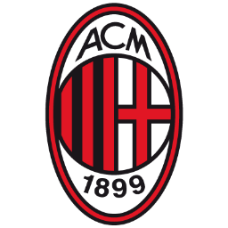
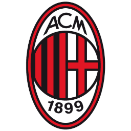

AC MILAN
(7 CHAMPIONS)
"SEREMOS UN EQUIPO DE DIABLOS"
El AC Milan es uno de los clubes más exitosos en la historia de la Liga de Campeones de la UEFA, habiendo ganado el torneo en varias ocasiones y participado en numerosas fases finales a lo largo de los añosEl AC Milan ha sido un competidor formidable en la Liga de Campeones a lo largo de los años, con su período más exitoso en la competición durante las décadas de 1980 y 1990, así como a principios de los años 2000. Aunque no han ganado el torneo desde 2007, el club sigue siendo uno de los nombres más respetados en el fútbol europeo.

 
